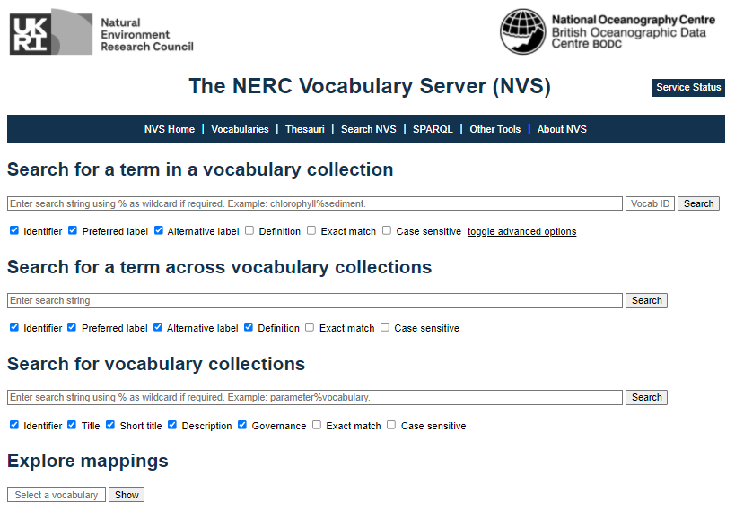

Searching NERC Vocabulary Server (NVS)
From the NERC Vocabulary Server website: The NVS gives access to standardised and hierarchically-organized vocabularies. It is managed by the British Oceanographic Data Centre at the National Oceanography Centre (NOC) in Liverpool and Southampton, and receives funding from the Natural Environment Research Council (NERC) in the United Kingdom. Major technical developments have also been funded by European Union’s projects notably the Open Service Network for Marine Environmental Data (NETMAR) programme, and the SeaDataNet and SeaDataCloud projects.
Controlled vocabularies are used by data creators and data managers to standardise information. They are used for indexing and annotating data and associated information (metadata) in database and data files. They facilitate searching for data in web portals. They also enable records to be interpreted by computers. This opens up data sets to a whole world of possibilities for automated data workflows, computer aided manipulation, distribution, interoperability, and long-term reuse.
The current content of the NVS is predominantly targeted at the oceanographic and associated domains. It is used by the marine science community in the UK (MEDIN), Europe (SeaDataNet), and globally, by a variety of organisations and networks.
Using the NVS Vocab Search
The NERC vocabulary server can be found at https://vocab.nerc.ac.uk/search_nvs/.

Using GBIF Validator
Once you’ve determined that there are no crazy outliers or flags raised with your dataset, and your dataset has been standardized to the DwC-A format, you can run the GBIF Data Validator. By submitting a dataset to the validator tool, you can go through the validation and interpretation procedures and determine potential issues with the standardized data without having to publish it. The following files can be dropped or uploaded to the validator tool:
- ZIP-compressed DwC-A (containing an Occurrence, Taxon or Event Core)
- IPT Excel templates containing Checklist, Occurrence, or Sampling-event data
- CSV files containing Darwin Core terms in the first row.
The validation tool provides an indication of whether the dataset can be indexed by GBIF and OBIS or not, and provides a summary of issues found during interpretation of the dataset. The main advantage is that you don’t have to publish your data through the IPT (and hence make it publicly visible) prior to determining any issues related to the data or metadata. You will be able to view the metadata as a draft version of the dataset page as it would appear when the dataset is published and registered with GBIF. It is typically the final step to be done prior to going through the IPT and publish your dataset.
Example : Using the GBIF DwC Validator
The GBIF data validator can be used to check a DwC archive
.zip. The validator will highlight issues with the archive like bad rows, missing columns, and much more.You can try using the validator with this example DwC
.zipfile and see the issues with it.Solution
The following are issues with the provided DwC archive reported by the GBIF validator (as of 2022-01):
- Country derived from coordinates
- Taxon match fuzzy
- Taxon match higherrank
- Taxon match none
- Basis of record invalid
- Coordinate rounded
- Geodetic datum assumed WGS84
If you are at this stage with your own DwC-standardized dataset, run the GBIF validation tool to determine if there are any issues with your dataset!